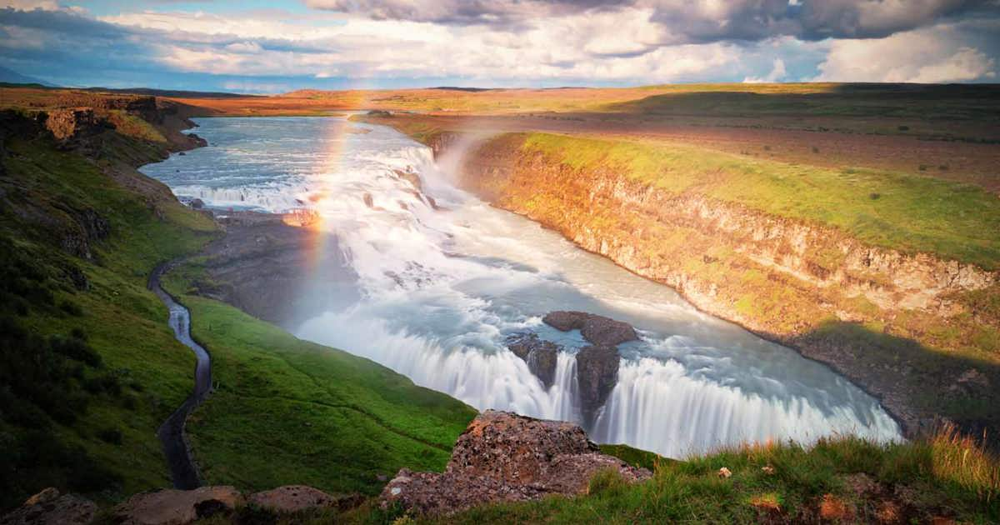

Iceland - A Land of Fire and Ice
Where waterfalls roar and geothermal waters soothe a wandering soul.

Gullfoss Waterfall
A majestic cascade, carving its way through the Icelandic wilderness.

Blue Lagoon
Soak in the ethereal geothermal waters and dream among the steam.
Cultural Spotlight
Iceland is a land of myths, legends, and natural wonders. Ancient sagas tell of heroes and trolls, while modern traditions celebrate music, literature, and storytelling. Its rich culture is reflected in local festivals and the warmth of Reykjavik’s community gatherings.
Practical Tips
- Best time to visit: June–August for long daylight and scenic hiking.
- Must-pack items: warm layers, waterproof gear, and sturdy hiking shoes.
- Experiences to dream of: geothermal pools, glaciers, waterfalls, and volcanic landscapes.
- Immersion: Learn about folklore and local legends to feel the soul of Iceland.